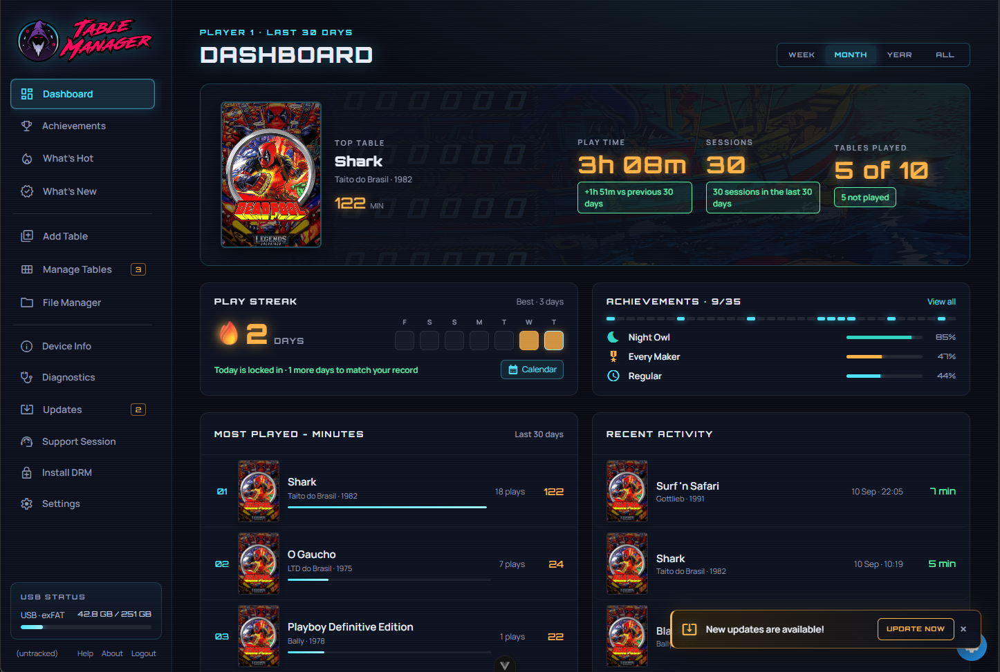

Two years, 250 beta members, one very full USB drive. Thank you ♥
Table Manager leaves beta this week. Everything below comes straight out of the repo history — every commit, every table, every late night that went into getting VPX Standalone running on the Legends Pinball 4K and HDP.

7,819 commits, month by month
The first summer built the foundation. Spring 2025 was the table rush. This year has been polish, launcher art, and getting the catalog ready to ship.
Who showed up.
Pull requests reviewed.
250 people in the beta
Sixty-three names show up in the commit log. Another 187 were in the Discord testing builds, reporting bugs, arguing about plunger calibration and telling everyone which tables to try next. The first six joined in May 2023, more than a year before the initial commit.
157,207 messages
Counted to 10 September 2026. The beta channel alone carried nearly half of it.
Who did the talking.
Messages across all channels. Six people account for roughly 142,000 of them.
All 63 contributors
Total commits including merges, so these run higher than the authored counts above.
When the work happened
Commits by hour of day, then by weekday. This is a nights-and-weekends project, and it shows: 5am is the quietest hour of the whole beta, 4pm the busiest.
315 tables, and the full history of every one
Each table carries its own record: the launcher art as it evolved, the config as it was tuned, and every commit that touched it. Open a table to see its history.
788 days from the initial commit to the Public Release
Somebody pushed something on 487 of those days. Here are the moments the history actually turns on.
48 wizard releases
Every release from the first tag to the last, carrying 270 table additions and 392 table updates between them. v1.0.0 arrives with 61 tables; v2.0.0 revises 74 in a single pass.
When people joined
First-ever commit, by month. Thirteen people were there in month one; January 2025 brought the largest intake of the whole beta at sixteen.
Busiest days of the beta
Commits landed in a single day.